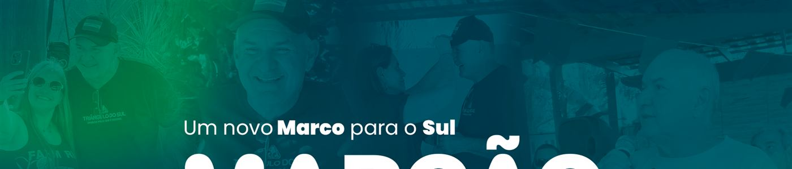
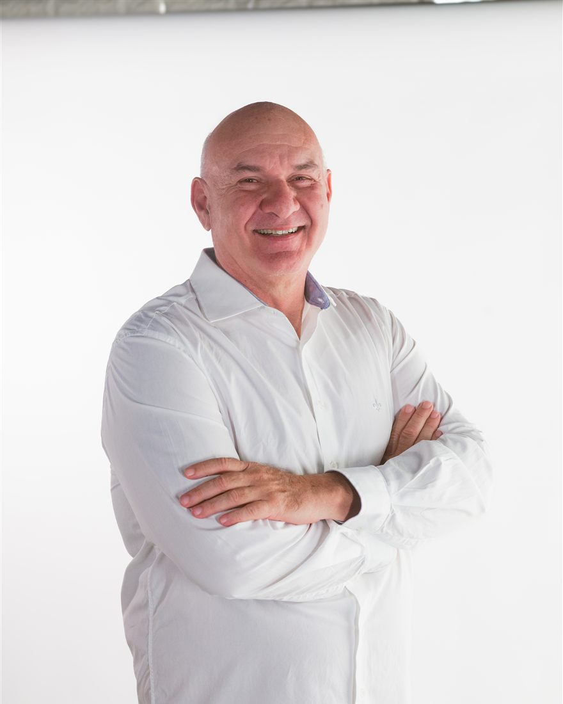
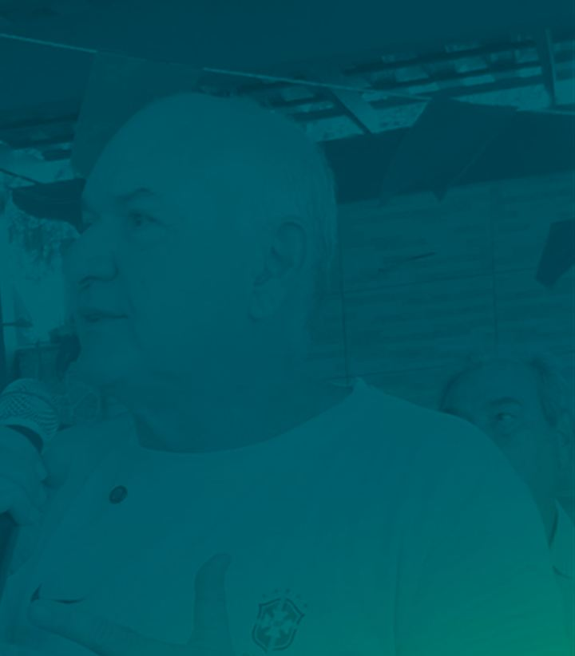
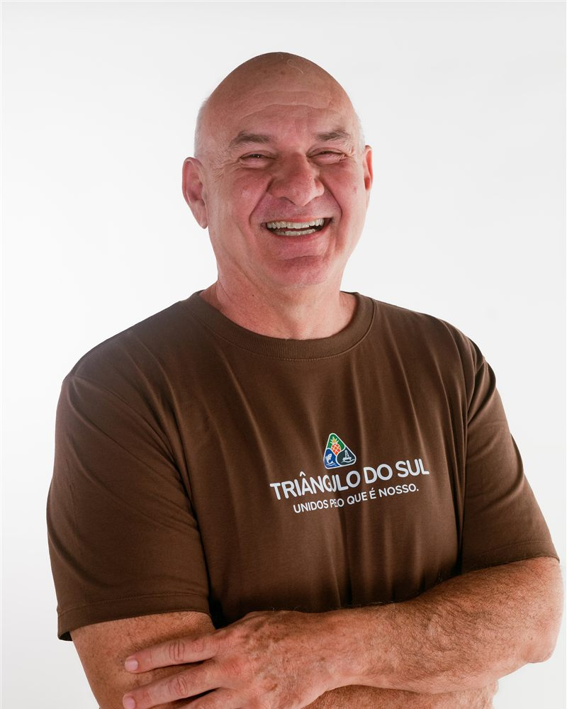

Um novo Marco para o Sul
Deputado Estadual pelo Espírito Santo. Nascido, criado e votando no Sul — 028 não é só DDD, é de onde eu venho e por quem eu trabalho.
4 de outubro de 2026 · turno único

para o Sul
O sul tem número
O eleitor do Sul não precisa decorar o meu número.
Ele já disca esse número todo dia.
028 é o DDD de Cachoeiro, Marataízes, Itapemirim, Presidente Kennedy, Piúma, Castelo, Muqui, Alegre e Guaçuí. É o código que identifica a região inteira — a nossa.
“Meu número termina com o DDD do Sul. Porque eu sou daqui.”
O conceito
MARCO não é só o meu nome.
Marco Antônio. Marcão. O nome que o povo do Sul do ES já conhece. Mas “marco” carrega três significados — e a campanha inteira é sobre eles.
-
O nome
Marco Antônio Vieira de Novaes
O homem por trás do apelido. Raiz, família, trajetória. No Sul, ninguém chama pelo nome de documento — chama de Marcão, e sabe de quem está falando.
-
O divisor
Marco histórico. Ponto de virada.
Vinte anos sem voz na Assembleia termina aqui. O Sul manda gente, manda imposto, manda produção — e não manda representante.
-
A referência
Marco de fronteira. A pedra que define território.
O Sul do Espírito Santo finalmente demarcado no mapa. Não como periferia da capital: como região com nome, número e voz próprios.
O território
O SUL
Nove municípios dividem o mesmo código, o mesmo litoral, a mesma serra e os mesmos problemas de estrada, de fila de exame e de emprego que vai embora pra Grande Vitória.
- Marataízes
- Itapemirim
- Presidente Kennedy
- Cachoeiro de Itapemirim
- Piúma
- Castelo
- Muqui
- Alegre
- Guaçuí
Em amarelo, as três cidades do Triângulo do Sul — o movimento que deu origem a esta candidatura.

A escuta
O TRIÂNGULO
TEM VOZ
Marataízes é abacaxi — 58% da produção do Espírito Santo. Itapemirim é pesca — Itaipava é o maior porto pesqueiro do estado. Presidente Kennedy é petróleo — o maior arrecadador de royalties do ES. Três economias, três cidades, um triângulo. Toque em uma delas.
As três cidades, do norte ao sul
-
Itapemirim Pesca
Ainda não temos registro de escuta publicado aqui.
-
Marataízes Abacaxi
Ainda não temos registro de escuta publicado aqui.
-
Presidente Kennedy Petróleo
Ainda não temos registro de escuta publicado aqui.
O símbolo mostra o vínculo entre as três cidades — não é um mapa. A ordem da lista é a geográfica, do norte para o sul.
As bandeiras
Cinco frentes. Todas com nome de lugar.
Estes são os eixos que o Marcão já assumiu em público. Cada um vira compromisso com endereço — e enquanto o compromisso concreto não vier da assessoria, o card fica marcado. Proposta vaga não entra neste site.
-
01
Infraestrutura
Estrada, saneamento, porto e a ligação entre as nove cidades do 028. O que trava o Sul não é falta de riqueza — é falta de caminho pra ela circular.
TODO (T2) — bloqueia o card Falta o problema concreto (qual trecho, qual município) e o compromisso.
-
02
Saúde
Fila de exame, leito e o transporte de paciente que sai da nossa região pra resolver o que devia resolver aqui.
TODO (T2) problema concreto + compromisso
-
03
Educação
Escola técnica perto de casa e formação ligada ao que a região realmente faz: pesca, agro, petróleo e turismo.
TODO (T2) problema concreto + compromisso
-
04
Desenvolvimento econômico
Royalty que fica, indústria que chega e o turismo que não pode durar só janeiro.
TODO (T2) problema + compromisso
-
05
Emprego e oportunidade
Pra que o filho de quem mora aqui não precise escolher entre ficar sem trabalho ou ir embora.
TODO (T2) problema + compromisso
-
Faltou o seu tema?
Manda pra gente.
A pauta do Sul não cabe em cinco cards.
Falar no WhatsApp

Quem é
Marco Antônio Vieira de Novaes.
No Sul, todo mundo chama de Marcão.
O apelido veio antes da política. A candidatura veio do Triângulo do Sul — o movimento que juntou Marataízes, Itapemirim e Presidente Kennedy em torno de uma ideia simples: a região precisa falar com voz própria na Assembleia.
TODO (T2) — bloqueia esta seção Faltam os três blocos em primeira pessoa (origem, trajetória, motivação), escritos como ele fala. Nada de currículo em bullet. Falta também checar no DivulgaCand o histórico eleitoral de 2018 e 2022 — há risco de homônimo, e nada disso vai ao ar sem confirmação.
Apoie
#agoraéMARCÃO!
Campanha no Sul não se ganha com dinheiro, se ganha com gente falando com gente. Escolha por onde você quer entrar:
Agenda, material pra compartilhar e o que rolou em cada cidade.
É o formulário aqui do lado. Leva dois minutos.
Material pronto pra story, com o número grande e legível no celular.